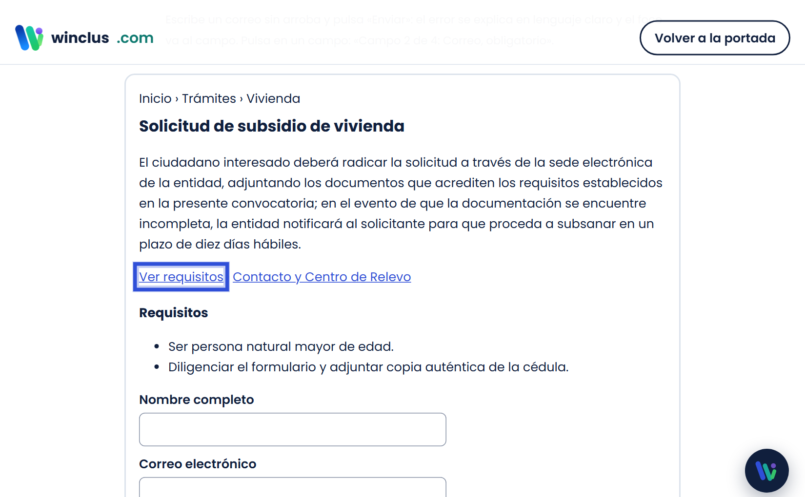
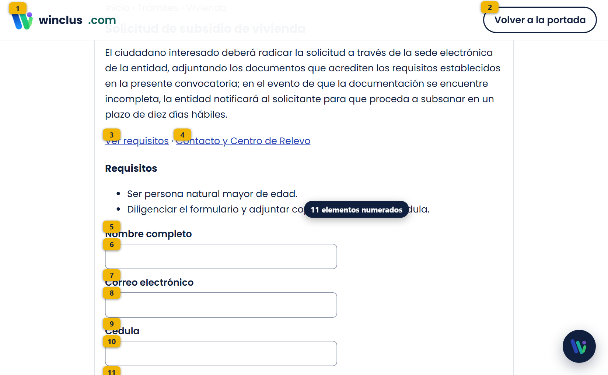
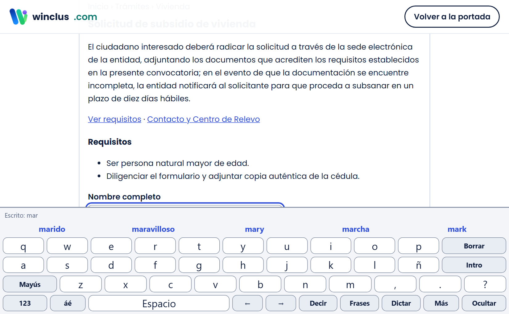
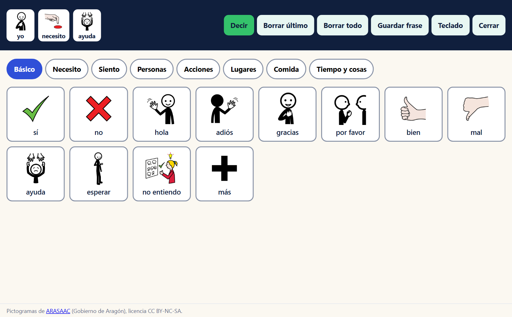
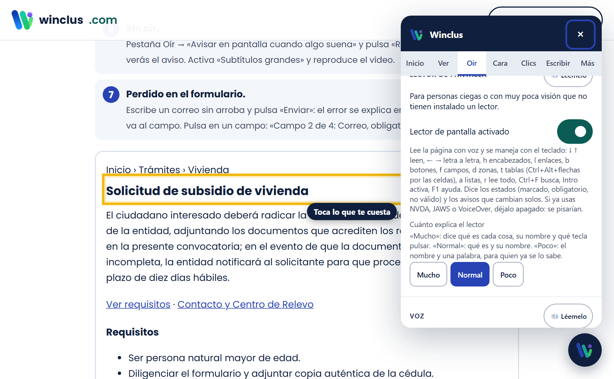
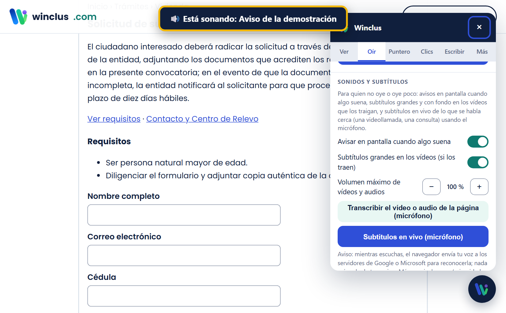
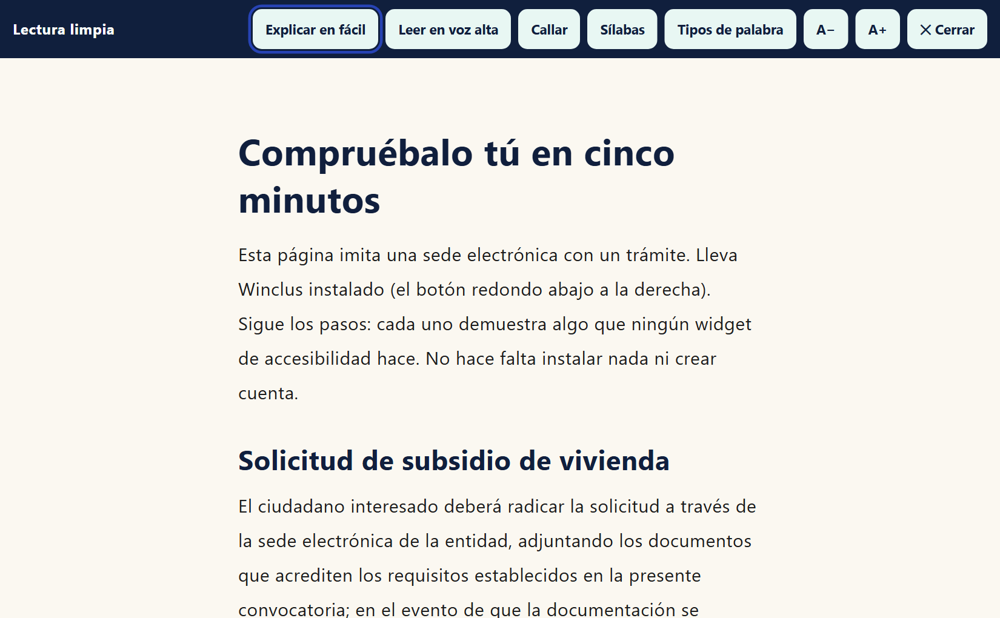
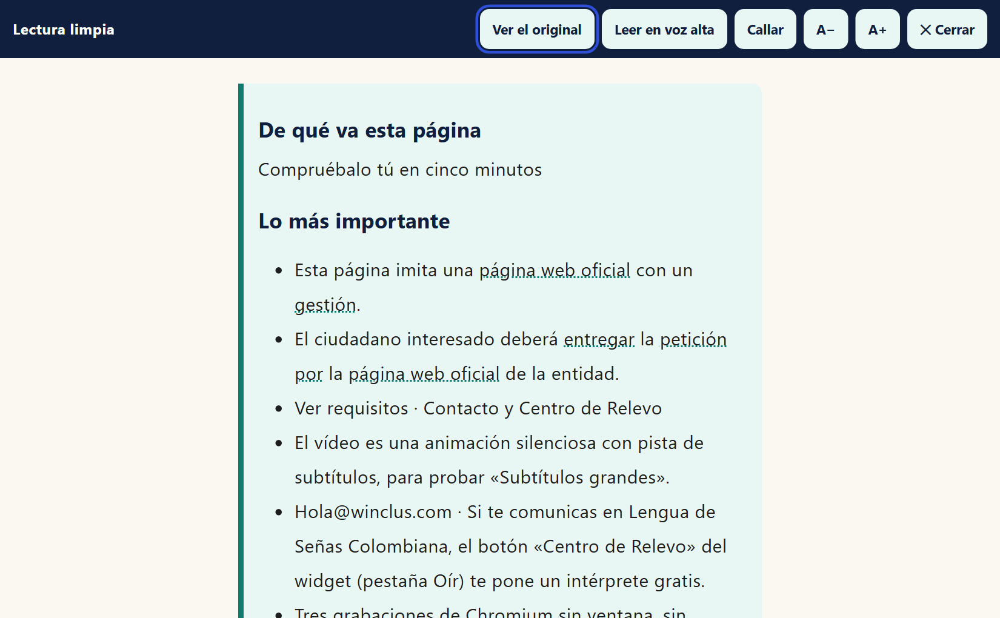
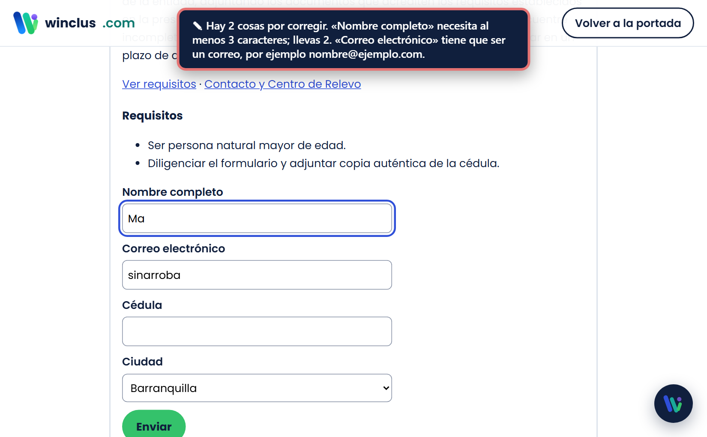
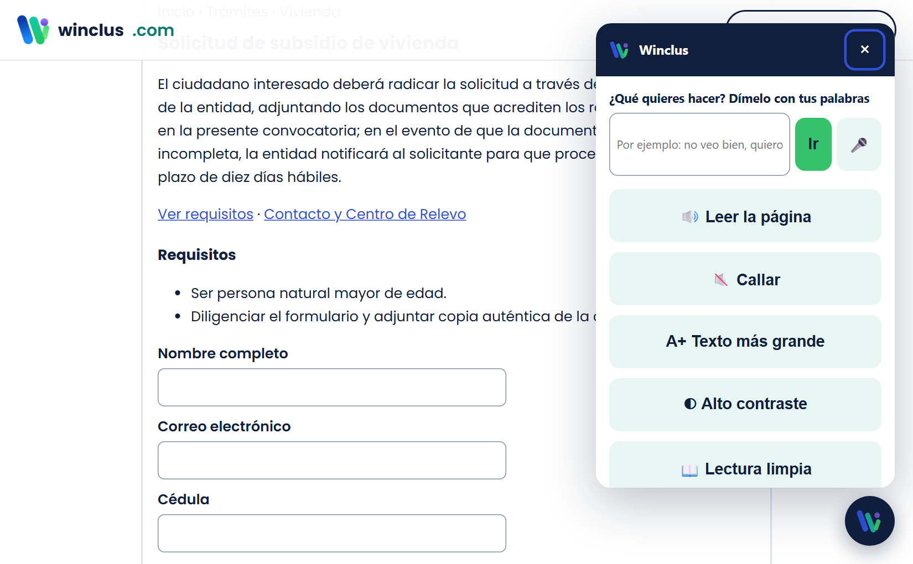

Para las personas que lo usan. En lenguaje claro: cada situación dice para qué discapacidad sirve, qué hacer paso a paso y cómo se ve en pantalla. Versión 0.6.14, septiembre de 2026. Si algo no sale, escríbenos a hola@winclus.com: la culpa es del programa, no tuya.
Antes de empezar
1. Busca el botón redondo. Está abajo a la derecha de la página (a veces a la izquierda). Tiene una W. Púlsalo y se abre el panel de Winclus.
2. Si no puedes pulsar con el ratón. Pulsa la tecla Tab varias veces hasta que el botón quede marcado y luego Intro. O di a quien esté contigo que lo abra la primera vez.
3. Empieza por lo que te pasa. El panel se abre en la pestaña Inicio con la pregunta «¿Qué te cuesta?» y botones como «Veo poco», «No oigo bien», «No puedo usar el ratón» o «Solo puedo pulsar un botón». Cada botón lleva un dibujo (los mismos pictogramas del tablero de comunicación). Toca el tuyo (o varios) y Winclus enciende lo que ayuda y te dice qué ha hecho. La primera vez, la voz te lo explica y los botones parpadean. Debajo están «Explícame esta página en fácil» y «Léeme esta página», una caja para decirlo con tus palabras, y la lista «Lo que tienes activado» con un botón para apagarlo todo.
4. Todo lo que actives se guarda. La próxima vez que entres en la misma página, Winclus recuerda tus ajustes. Para llevarlos a otro equipo: pestaña Más → «Copiar enlace con mis ajustes», y abre ese enlace allí.
5. Cada opción se explica sola. Debajo de cada interruptor hay una frase que dice qué hace y para quién sirve. Los números técnicos están plegados en «Ajustes finos»: no hace falta tocarlos salvo que algo no vaya bien. Si prefieres oírlo, cada sección tiene un botón «Léemelo» que lee en voz alta sus opciones, cómo están y qué hacen; y con el barrido a 2 segundos o más, cada interruptor se anuncia con su ayuda.
Winclus no guarda ni envía tu imagen ni tus datos. Todo pasa en tu navegador. Lo único que sale de tu equipo es tu voz cuando usas «Dictar» o «Escuchar órdenes», porque el reconocimiento lo hace el navegador (Google o Microsoft), y el panel te lo avisa.
El panel en la pestaña Cara con el botón «Activar cámara»; el puntero azul de Winclus está sobre el enlace «Ver requisitos».
Activar. Panel → pestaña Cara → «Activar cámara» (o en Inicio, «No puedo usar el ratón»). La primera vez te pide permiso y te explica qué hace la cámara. Acepta. El navegador también te pedirá permiso: pulsa «Permitir».
Mover. Mueve la cabeza despacio: el puntero te sigue. Si quieres moverlo con los ojos, elige «Con los ojos» y haz la calibración de 40 segundos mirando los puntos.
Bajar y subir. Con la cámara en marcha salen dos señales: «▼ Bajar» abajo y «▲ Subir» arriba. Lleva el puntero a la de abajo y la página baja sola (más deprisa cuanto más pegado al borde); a la de arriba, sube. Apártalo y para. También bajas abriendo la boca y subes con las cejas, o diciendo «baja» y «sube».
Elegir sin tener que acertar. Con los ojos es imposible dar justo en un enlace pequeño, y no hace falta: si cerca del puntero hay varias cosas, Winclus no adivina. Sale una lista con botones grandes que dice qué hay ahí («Aceptar, enlace», «Ciudad, desplegable») y eliges de ella. Si solo hay una cosa cerca, va directo a ella aunque el puntero se quedara al lado. Y lo que se va a pulsar aparece rodeado con un marco azul antes de que hagas el gesto.
Desplegables. Al pulsar un desplegable salen todas sus opciones en botones grandes, no de una en una. Eliges una, se queda puesta y Winclus la dice en voz alta.
Si el puntero no llega a las esquinas o tiembla. Pestaña Cara: «Llegar a los bordes de la pantalla» (la calibración mide con margen y se queda corta en las esquinas) y «El puntero tiembla: dejarlo más quieto». Los dos son un solo interruptor.
Si el gesto de clic no te sale. Si llevas un rato moviendo el puntero sin conseguir pulsar nada, Winclus te lo pregunta y te ofrece pulsar quedándote quieto, abriendo la boca o subiendo las cejas. También puedes cambiarlo tú en la pestaña Clics.
Hacer clic. Cierra los ojos medio segundo. Si prefieres, en la pestaña Clics elige abrir la boca, subir las cejas o quedarte quieto encima.
Más cosas (el menú en rueda). Cierra los ojos algo más de un segundo y aparece una rueda con clic derecho, doble clic, arrastrar, rueda, teclado, leer y pausar. Mira una opción y ciérralos otra vez, o mira «Cerrar» para salir. La primera vez que sale, Winclus te explica por voz qué es.
¿Se te abre esa rueda al hacer clic? Es que tus cierres de ojos duran más que el tiempo del menú. Winclus lo detecta solo (si tus clics duran casi lo mismo, aparta el menú más arriba) y, si se abre dos veces sin que elijas nada, te pregunta y lo arregla en un toque. También puedes hacerlo tú: pestaña Clics → «Abrir el menú de clics cerrando los ojos» para apagarlo, o «Ajustes finos» → «Cuánto hay que cerrar los ojos» para pedir más tiempo.
Calibración a tu medida. Pestaña Cara → «Ajustes finos»: «Rápida» (9 puntos), «Normal» (13) o «Completa» (25), «Más tiempo en cada punto», «Punto más grande» y el «Paso final de compensación de cabeza» (miras el centro moviendo un poco la cabeza; se guarda solo si mejora y te dice cuánto). Al terminar te dice el error real en píxeles.
Si ya tienes un rastreador de mirada. Pestaña Cara → «Otro aparato mueve el puntero»: Tobii, Windows Eye Control o cualquier aparato lleva el puntero y Winclus pone encima el clic por parpadeo, los gestos, el menú, el teclado y la voz. También en la aplicación de Windows.
Si la página se mueve sola. Viene puesto que abrir la boca baja la página y subir las cejas la sube. Si al hablar, bostezar o respirar se te mueve, apaga «Usar los gestos de la cara» en la pestaña Clics: el gesto con el que haces clic sigue funcionando. También puedes dejar solo ese gesto en «Nada», o subir «Cuánto hay que marcar el gesto» en «Ajustes finos».
Gestos nuevos. En la pestaña Clics, «Otras acciones con gestos»: también puedes guiñar un ojo o inclinar la cabeza a un lado para hacer clic derecho, bajar, subir, abrir el menú o el teclado. En la aplicación de Windows están los mismos, y si ya tienes un rastreador de mirada (Tobii, Windows Eye Control) puedes marcar «Otro aparato mueve el puntero» para que Winclus solo haga los clics y los gestos.
Si el puntero tiembla. Pestaña Cara → abre «Ajustes finos» y sube «Quietud del puntero». Y deja «Imán a los botones» activado: el puntero se pega solo a lo que está cerca.
Ponte con luz de frente, no con una ventana detrás. Si tienes gafas, evita reflejos. Cuando quieras descansar, cierra los ojos algo más de un segundo y elige «Pausar».
Solo puedo pulsar una cosa (un pulsador, una tecla, un gesto)
Para: Discapacidad motriz severa: quien solo controla un movimiento (un pulsador, una tecla, un soplo, un gesto).

El barrido marca con un marco azul el enlace «Ver requisitos»; al dar la señal, se pulsa.
Activar el barrido. Panel → pestaña Clics → «Barrido activado». Elige la señal: Espacio, Intro, cualquier tecla o el clic del ratón. Si usas la cámara, el gesto de clic también es la señal.
Usarlo. Un marco azul va pasando por los botones, enlaces y campos de la página. Cuando está en lo que quieres, da la señal. Si va muy rápido o muy lento, cambia «Tiempo en cada elemento».
Escribir. Cuando el marco llegue a un campo, da la señal: se abre el teclado. El marco pasa primero por las filas; da la señal en la fila, y luego por las teclas; da la señal en la letra.
Pausar.Esc para el barrido; otra vez Esc y sigue.
Dos pulsadores. «Cómo avanza el marco» → «Con dos pulsadores»: una señal mueve el marco y la «Señal para elegir» elige. Sin tiempos: vas a tu ritmo.
Zonas. «Barrer por zonas»: primero se marcan las zonas (menú, contenido, pie) y, al elegir una, sus botones y enlaces. Menos pasos en páginas largas.
Cualquier punto. «Poder tocar cualquier punto»: aparece el botón «Cualquier punto»; al elegirlo, una línea baja por la pantalla y la paras con la señal, otra cruza y la paras: ahí se hace clic. Para mapas y cosas sin botones.
Más que un clic. «Menú de acciones al elegir»: al elegir algo sale un menú con clic, clic largo, arrastrar, leer o escribir. «Acelerar solo» baja el tiempo con cada acierto.
Quiero usarlo con la voz
Para: Discapacidad motriz y baja visión: quien prefiere hablar en vez de tocar.

Tras decir «números», cada botón, enlace y campo lleva una etiqueta amarilla con su número; abajo, «11 elementos numerados».
Órdenes. Pestaña Oír → «Escuchar órdenes». Di «baja», «sube», «clic», «pulsa» y el nombre de un enlace, «lee», «teclado», «pausa», «explícame esta página», «dónde estoy».
Números. Di «números»: aparece un número sobre cada botón, enlace y campo. Di «clic doce» o «escribe en tres».
Dictar. Pulsa un campo, abre el teclado y pulsa «Dictar». Si activas «Confirmar antes de escribir», Winclus te lee lo que entendió y escribes diciendo «sí» o borras diciendo «no».
Necesitas Chrome o Edge. Tu voz se envía al reconocedor del navegador (Google o Microsoft) mientras escuchas; cuando paras, deja de enviarse.
En la aplicación de Windows. Página Escribir → «Hablarle a Winclus» → botón Escuchar. Vale para todo el ordenador, no solo para la página: «baja», «clic», «doble clic», «pulsa» y el nombre de un botón, «abre el bloc de notas», «busca el tiempo en Bogotá», «copia», «pega», «atrás», «lee la pantalla», «teclado», «menú», «pausa», «sigue», «calla», «deja de escuchar». Di «¿qué puedo decir?» y te lo cuenta en voz alta.
Dictar en Windows. Di «dicta» (o pulsa Dictar) y lo que hables se escribe donde esté el cursor, con sus signos: di «coma», «punto», «nueva línea», «abre interrogación», «mayúscula». Para corregir: «borra eso» quita lo último, «borra palabra» la última palabra y «borra todo» vacía el campo. «Para el dictado» vuelve a las órdenes.
Si no te oye. Winclus no se queda callado: al encender el micrófono te avisa si está en silencio o con el volumen casi a cero, y si pasan veinte segundos sin que llegue nada de sonido te dice qué mirar. El botón Probar el micrófono escucha cuatro segundos y te responde en voz alta: «te oigo bien» o por qué no («no me llega nada por el micrófono X», «te oigo muy bajito», «te oigo pero no entiendo lo que dices»). Debajo del estado sale siempre el nombre del micrófono que usa Windows, que es el fallo más común: hablarle a uno mientras el ordenador escucha por otro.
En Windows, las órdenes se reconocen dentro de tu equipo y funcionan sin internet: Winclus le da al reconocedor la lista de lo que puede oír, así acierta más y tu voz no sale de ahí. El dictado de texto libre es distinto: Windows solo lo permite si enciendes «Reconocimiento de voz en línea» (Configuración → Privacidad y seguridad → Voz), y entonces es Windows quien manda tu voz a Microsoft. Winclus te lo dice en la misma pantalla y tiene un botón para abrir ese ajuste.
No puedo usar el teclado
Para: Discapacidad motriz en las manos: temblor, artritis, poca fuerza, uso de un solo dedo o del puntero facial.

El teclado en pantalla abajo, con lo escrito («mar») y las sugerencias marido, maravilloso, mary, marcha, mark.
Teclado en pantalla. Pulsa en un campo de la página y luego el botón del teclado (pestaña Escribir, o el anillo de clics, o di «teclado»). Escribe pulsando las teclas con el puntero, con la cara, con el barrido o con Tab e Intro.
Sugerencias. Arriba del teclado aparecen palabras que empiezan como la que escribes. Pulsa una y la completa. Winclus aprende tus palabras.
Capas. «123» para números, «áé» para acentos, «Más» para copiar, pegar y flechas, «Frases» para tus frases guardadas.
No puedo hablar
Para: Discapacidad del habla y la comunicación: afasia, parálisis cerebral, ELA, autismo no verbal, traqueotomía.

El tablero de pictogramas: la frase «yo · necesito · ayuda» arriba, las categorías y los dibujos de ARASAAC abajo.
Frases rápidas. Teclado → «Frases»: «Sí», «No», «Necesito ayuda», «Tengo dolor»… Pulsa una y Winclus la dice en voz alta. Cámbialas en pestaña Oír → «Hablar por mí».
Decir lo que escribas. Escribe en el teclado y pulsa «Decir».
Con dibujos. Pestaña Oír → «Tablero de pictogramas». Toca los dibujos («yo», «necesito», «agua») y cada uno se dice; pulsa «Decir» para la frase entera. Winclus te sugiere el siguiente dibujo y puedes guardar tus frases.
La página con el texto al 150 % y alto contraste; en el panel, pestaña Ver, «Tamaño del texto», «Alto contraste» y «Cursor del ratón grande» activados.
Rápido. En «¿Qué quieres hacer?» escribe «no veo bien»: texto más grande y más contraste.
A tu gusto. Pestaña Ver: tamaño del texto (hasta el doble), alto contraste, modo oscuro, cursor grande, lupa de pantalla (hasta 16 veces, sigue al puntero), guía de lectura.
Que te lo lean. Pestaña Oír → «Leer en voz alta lo que se pulsa» o «Leer la página».
Títulos y foco. Pestaña Ver → «Resaltar títulos» pone fondo y borde a cada título de la página; «Resaltar dónde estás» rodea con un marco grueso el botón o el campo en el que estás.
Pestaña Ver, sección «Colores y calma»: los cinco botones de «Si confundes colores»; «No distingo el rojo» está elegido y la página se ve con los colores recalculados.
Elegir tu caso. Pestaña Ver → «Si confundes colores»: elige «No distingo el rojo» (protanopia), «No distingo el verde» (deuteranopia), «No distingo el azul» (tritanopia) o «Todo en gris». Los colores de la página se recalculan para que los distingas.
No veo
Para: Ceguera y visión muy reducida.

El lector de Winclus marca con un recuadro amarillo el título «Solicitud de subsidio de vivienda» que está leyendo; en el panel, «Lector de pantalla activado».
Si ya usas NVDA, JAWS o VoiceOver. Sigue con ellos: Winclus no los estorba. El panel de Winclus se maneja con Tab, flechas e Intro como cualquier página.
Si no tienes lector. Pestaña Oír → «Lector de pantalla activado». Flechas ↓ ↑ leen; h salta por encabezados, l enlaces, b botones, f campos; Intro activa; F1 ayuda.
Moverte por la página.d zonas (menú, contenido, pie), t tablas y Ctrl+Alt+flechas por sus celdas con la cabecera, a listas, c casillas, 1 a 6 encabezados por nivel. Flechas ← → leen letra a letra, con Ctrl palabra a palabra; s deletrea; r lee todo desde ahí; Ctrl+F busca. En un campo escribes normal y Esc vuelve a leer.
Cuánto explica. Pestaña Oír → «Cuánto explica el lector»: mucho (qué es, nombre y qué tecla pulsar), normal o poco. Y «Tono de la voz» para hacerla más grave o aguda.
En Windows. En la pestaña Oír, «Descargar NVDA» te lleva al lector gratuito que lee todo el sistema; y el instalador de Winclus (winclus.com/instalar.ps1) ofrece instalar NVDA, el lector gratuito que lee todo el sistema; Winclus se lleva bien con él.
No oigo o oigo poco
Para: Discapacidad auditiva: sordera, hipoacusia, personas usuarias de Lengua de Señas Colombiana.

Arriba, el aviso «Está sonando: Aviso de la demostración»; en el panel, pestaña Oír, «Avisar en pantalla cuando algo suena» y «Subtítulos grandes» activados, y los botones de subtítulos en vivo y transcripción.
Avisos. Pestaña Oír → «Avisar en pantalla cuando algo suena»: cada vez que un vídeo o un audio suene, verás un aviso arriba (y el móvil vibra).
Subtítulos. «Subtítulos grandes en los vídeos» los muestra grandes y con fondo, si el vídeo los trae. «Subtítulos en vivo (micrófono)» escribe lo que se habla cerca: sirve en una videollamada o en una consulta. «Transcribir el vídeo o audio» escucha por el micrófono lo que sale por los altavoces.
Lengua de Señas. En la misma pestaña: «Centro de Relevo» (intérprete de LSC por videollamada, gratis, de MinTIC) y «Diccionario de Lengua de Señas (INSOR)».
Me cuesta leer
Para: Dislexia y otras dificultades de lectura; fatiga visual.

La lectura limpia: solo el texto, grande y sin distracciones, con los botones «Explicar en fácil», «Leer en voz alta», «Callar», «Sílabas», «A−», «A+».
Lectura limpia. Pestaña Ver → «Lectura limpia»: solo el texto, grande, sin anuncios ni columnas. Botón «Leer en voz alta»: la palabra que suena se resalta.
Dislexia. «Letras y palabras más separadas», «Guía de lectura» y «Ver solo una franja» (oscurece todo menos una franja).
Tipos de palabra. En «Lectura limpia», el botón «Tipos de palabra» pinta los nombres en azul, las acciones en verde y las cualidades en naranja (por reglas: es aproximado).
Sílabas y diccionario. En «Lectura limpia», el botón «Sílabas» colorea cada sílaba. Pestaña Ver → «Diccionario al tocar una palabra»: tocas una palabra de la página (o de la lectura limpia) y sale qué significa, con un dibujo si lo hay, y Winclus lo lee. También con el puntero de la cara.
No entiendo el texto
Para: Discapacidad intelectual y cognitiva: síndrome de Down, daño cerebral adquirido, demencia inicial, baja alfabetización.

El texto explicado en fácil: «De qué va esta página», «Lo más importante» en frases cortas; las palabras cambiadas van subrayadas y el botón pasa a «Ver el original».
Explicar en fácil. Abre «Lectura limpia» y pulsa «Explicar en fácil»: frases cortas, palabras corrientes y lo importante primero. Las palabras subrayadas te enseñan la palabra original al pasar el cursor. También puedes decir «explícame esta página».
En tres frases y comprobar. La explicación en fácil trae «En tres frases» (lo esencial) y «Compruebo que lo entendí»: frases con una palabra tapada; «Ver respuesta» la enseña y la dice.
¿Dónde estoy? Pestaña Oír → «¿Dónde estoy?»: te dice el título, la sección, la ruta y cuánto llevas leído.
La versión en fácil la hace un programa siguiendo reglas: si algo importa mucho, confírmalo en el texto original o pregunta a una persona.
Palabras de todos los días. En el tablero, «Palabras»: las 300 palabras que más se usan, por colores (personas, acciones, cómo es, cosas, lugares, tiempo). Con «Frases bien dichas» (pestaña Oír), «yo querer comer» se dice «yo quiero comer»; en «Cuando hablo de mí» eliges masculino o femenino.
Tu propio tablero. «Míos» → escribe un nombre y «Crear tablero»; añade dibujos de ARASAAC («Buscar», más de 12 000), fotos de tu familia o palabras. «Compartir tablero» lo guarda en un archivo (y en un enlace) para pasarlo a otra persona o a otro equipo.
Lo que más dices. Cuando la frase está vacía, arriba salen tus frases más dichas: un toque y se dicen.
Me pierdo en los formularios
Para: Discapacidad cognitiva, TDAH, ansiedad, personas mayores, poca experiencia digital.

Al pulsar «Enviar» con errores, Winclus avisa: «Hay 2 cosas por corregir. Nombre completo necesita al menos 3 caracteres… Correo electrónico tiene que ser un correo…» y lleva el foco al primer campo.
No hay que activar nada. Al entrar en un campo, Winclus te dice «Campo 3 de 8: Correo, obligatorio». Si envías con errores, te los explica claro («Falta rellenar Nombre», «el correo tiene que ser como nombre@ejemplo.com») y te lleva al primero. Y puedes pegar aunque la página lo bloquee.
Los destellos, el movimiento o los sonidos me hacen daño
Pestaña Ver, sección «Colores y calma»: «Modo calma» activado; debajo, la lupa de pantalla, la lectura limpia y la máscara de enfoque.
Modo calma. Pestaña Ver → «Modo calma»: congela los GIF, para los vídeos que arrancan solos y baja la saturación y el brillo. «Pausar animaciones» detiene lo que se mueve. Si tu sistema ya pide «reducir movimiento», Winclus lo activa solo.
Volumen. Pestaña Oír → «Volumen máximo de vídeos y audios»: nada sonará más fuerte de lo que pongas.
Silencio. Pestaña Oír → «Silenciar la página»: ningún vídeo ni audio de la página suena, tampoco los que arranquen después.
Me abruman tantas opciones
Para: Personas mayores y quien usa la tecnología por primera vez.

El modo fácil: pocos botones grandes (Leer la página, Callar, Texto más grande, Alto contraste, Lectura limpia) y arriba la caja «¿Qué quieres hacer? Dímelo con tus palabras».
Modo fácil. Pestaña Inicio → «Modo fácil»: el panel se queda con pocos botones grandes: leer, callar, texto más grande, contraste, lectura limpia, lupa, usar con la cara. Arriba, la caja «¿Qué quieres hacer?» para decirlo con tus palabras (escribiendo o con el micrófono).
Si algo no va
La cámara no arranca: comprueba el candado de la barra de direcciones y permite la cámara; cierra otras aplicaciones que la usen.
No me entiende la voz: usa Chrome o Edge, acerca el micrófono, habla despacio; activa «Confirmar antes de escribir».
El texto no crece: esa página usa tamaños fijos. Usa la lupa de pantalla o el zoom del navegador (Ctrl y +).
Quiero empezar de cero: pestaña Más → «Restablecer todo».
Escríbenos: hola@winclus.com. Respondemos en máximo 10 días hábiles.